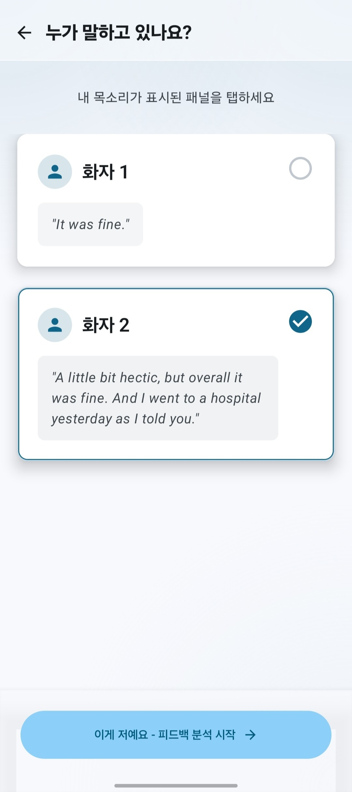
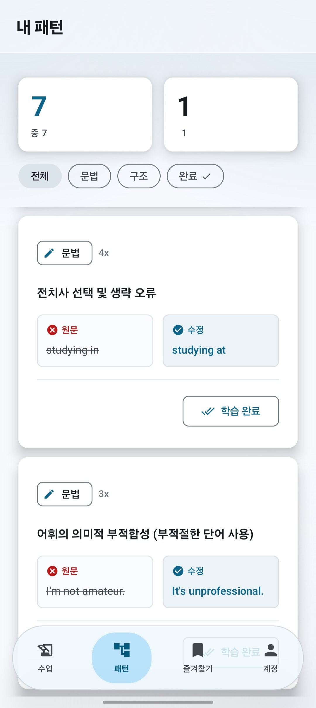

01
전화영어 녹음만 쌓이는 사람
매일 수업은 하지만 녹음 파일을 다시 듣지 못해 같은 표현 실수를 반복하는 경우에 좋습니다.
녹음만 쌓아두는 영어 수업, 이제 피드백까지
전화영어, 화상 수업, 외국인과의 통화 녹음 파일을 올리면 내폰안의 영어쌤이 내가 말한 부분만 찾아 문법, 어색한 표현, 더 자연스러운 문장을 정리해줍니다.

이런 사람에게 필요합니다
매일 수업은 하지만 녹음 파일을 다시 듣지 못해 같은 표현 실수를 반복하는 경우에 좋습니다.
회의, 통화, 스터디에서 말은 했지만 내 문장이 자연스러웠는지 확인할 방법이 없을 때 씁니다.
모의 답변 녹음을 올려 자주 틀리는 문장 구조와 더 좋은 표현을 빠르게 정리할 수 있습니다.
실제 비용으로 비교해보세요
유명 AI 회화앱은 AI와 새 대화를 연습하는 월 구독형 서비스에 가깝습니다. 내폰안의 영어쌤은 이미 전화영어와 실제 대화에서 말한 문장을 복습 자료로 바꿔주기 때문에, 수업비를 더 크게 늘리지 않고도 문장별 피드백을 추가할 수 있습니다.
| 학습 방식 | 지출 예시 | 피드백 대상 | 장점 |
|---|---|---|---|
| 스픽 같은 AI 회화앱 AI 튜터와 새 대화 연습 | 월 29,900원~59,900원 예시 | 앱 안에서 새로 연습한 문장 | 혼자 말하기 루틴을 만들기 좋음 |
| 전화영어 단독 예: 민병철유폰 10분 주3회 | 4주 114,950원 예시 | 수업 중 강사가 잡아준 일부 표현 | 실제 사람과 말하는 압박감이 있음 |
| 전화영어 + 내폰안의 영어쌤 수업 녹음을 그대로 업로드 | 전화영어 비용 + 1,000원대 크레딧부터 | 내가 실제로 말한 전체 문장 | 실전 수업은 유지하고, 복습 효율은 더 높임 |
가격은 공개된 2026년 스픽 월간 요금 예시와 민병철유폰 4주 전화영어 요금 예시를 바탕으로 한 비교입니다. 실제 결제 금액은 프로모션, 결제 경로, 수업 조건에 따라 달라질 수 있습니다.
사용 방법
영어 수업 녹음뿐 아니라 스터디, 회의 연습, 친구와의 대화처럼 실제로 말한 파일을 학습 자료로 바꿔줍니다.
오디오나 비디오 파일을 올리면 대화가 텍스트로 변환됩니다.
여러 화자가 있어도 내가 말한 목소리만 선택해 분석합니다.
문법 수정, 더 자연스러운 표현, 반복 실수 패턴을 확인합니다.
학습 화면 미리보기



개인 학습을 위한 관리
계정별 데이터 분리 Google 로그인 계정별로 수업과 피드백을 관리합니다.
삭제 가능 앱에서 lesson을 삭제하면 관련 피드백도 함께 정리됩니다.
투명한 안내 개인정보처리방침과 계정 삭제 안내를 앱과 웹에서 확인할 수 있습니다.